Inhalt Index DeskTop Bronstein

 Algebra und Diskrete Mathematik Elementare Zahlentheorie Lineare Diophantische Gleichungen
Algebra und Diskrete Mathematik Elementare Zahlentheorie Lineare Diophantische Gleichungen


Gegeben ist die lösbare DIOPHANTische Gleichung
| 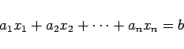 | (5.264a) |
mit 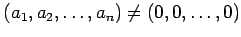 und 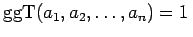. Wäre 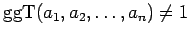, dann müßte man die Gleichung noch durch 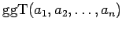 dividieren. Nach der Umformung
| 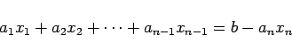 | (5.264b) |
betrachtet man xn als ganzzahlige Konstante und erhält eine lineare DIOPHANTische Gleichung in n-1 Unbekannten, die genau dann lösbar ist, wenn 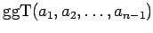 ein Teiler von b-anxn ist.
Die Bedingung
| 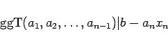 | (5.264c) |
ist genau dann erfüllt, wenn es ganze Zahlen 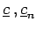 gibt, für die gilt:
| 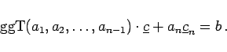 | (5.264d) |
Das ist eine lineare DIOPHANTische Gleichung in zwei Unbekannten, die mit Hilfe des Lösungsverfahrens für n=2 gelöst werden kann. Ist ihre Lösung bekannt, dann hat man nur noch eine lineare DIOPHANTische Gleichung in n-1 Unbekannten zu lösen.
Die beschriebene Reduktion ist fortsetzbar, bis man schließlich eine lineare DIOPHANTische Gleichung in zwei Unbekannten erhält, die mit dem Verfahren für n=2 gelöst werden kann.
Aus den zwischenzeitlich berechneten Lösungsmengen für DIOPHANTische Gleichungen in zwei Unbekannten muß man nun nur noch die Lösungsmenge der Ausgangsgleichung ablesen.
| Beispiel | ||
|
Es ist die DIOPHANTische Gleichung Die DIOPHANTische Gleichung
Die Gleichung (5.265c) ist lösbar wegen 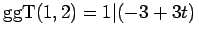. Es gilt 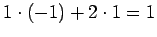 und 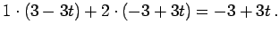 Die Lösungsmenge ist 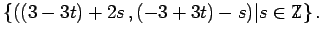 Daraus folgt 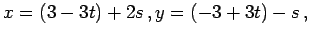 so daß sich die Lösungsmenge von (5.265a) zu 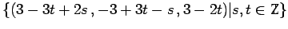 ergibt. |